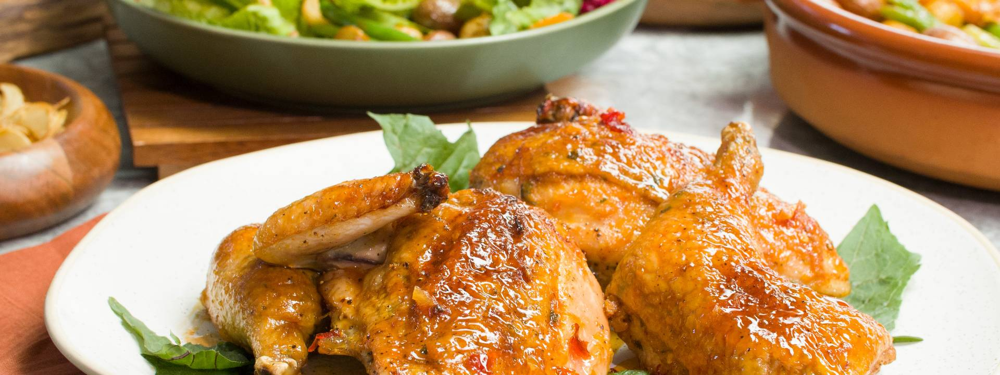

'NDUJA STUFFED CHICKEN WITH CALABRIAN HONEY, ROASTED POTATOES & CRISP GREENS

Description
'Nduja is made with meat from the trimmings from various meat cuts and fatback, and sun-dried Calabrian chilli peppers, which give 'nduja its characteristic fiery taste. These are minced together, then stuffed in large sausage casings and smoked, creating a soft large sausage, which is then aged for 3-6 months.
Ingredients
Roasted Garlic Honey with Calabrian Chilies
- ½ head of garlic, sliced in half (or 8 garlic cloves)
- 1 tablespoon olive oil
- Kosher salt and fresh cracked pepper
- 1 rosemary sprig, picked
- ¾ cup of local good-quality honey
- 1-2 tablespoons chopped Calabrian chilies
‘Nduja Stuffed Chicken
- 3 ounces goat cheese, room temperature
- 3 ounces ricotta cheese
- 2 garlic cloves, grated fine on a microplane
- 1 meyer lemon, zested (about 2 tablespoons of zest)
- 4 ounces ‘Nduja sausage
- 2 tablespoons fresh chopped parsley or picked thyme
- 1 tablespoon of olive oil
- 2 tablespoons finely chopped olives
- 1 - 4 pound chicken, cut into quarters
- 1 meyer lemon, sliced into ¼-inch thick half moons
- 1 pound peewee potatoes, halved if large
- 2-3 spring onions, trimmed and sliced on a bias into ½”
Spring Greens with Crispy Garlic Chips
- ¼ cup olive oil
- 6 large garlic cloves, sliced thin
- 2 teaspoons dijon mustard
- 3-4 teaspoons sherry vinegar
- 6 ounces haricot vert, trimmed, blanched, shocked, and sliced in half
- 3-4 cup chicories, cleaned and torn into bite sized pieces (escarole, treviso, endive)
- handful of little gems or baby bibb lettuce, torn into bite-sized pieces
- handful torn fresh fine herbs (basil or parsley)
- 1 small watermelon radish, halved and sliced thin into half moons
- meyer lemons, for juicing and zesting (optional)
Steps
- Preheat oven to 425˚F and lightly grease a baking sheet with olive oil.
- Roasted Garlic Honey: Place garlic head in a small sheet of tin foil, drizzle with 1 tablespoon of olive oil, sprinkle with salt and rosemary leaves. Seal foil, crimping at the top to close, roast until tender and caramelized about 30-40 minutes. Once cool enough to handle, squeeze garlic into a bowl, mashing as needed with a fork. Stream in honey and stir in Calabrian chiles until smooth, season with a few cracks of black pepper. Honey will keep in a jar in the refrigerator for up to 1 month.
- ‘Nduja Stuffing: In a bowl whisk together goat cheese, ricotta, garlic, and lemon zest until smooth. Stir in ‘Nduja, fresh herbs, season with salt, pepper and olive oil until incorporated.
- Stuff Chicken: Separating skin from breasts and thighs to create a pocket for the filling. Spoon (or pipe) filling into each breast, season with salt and pepper and drizzle with olive oil. Place chicken on prepared baking sheet and roast for 20 minutes, on middle rack in oven.
- Prepare Potatoes: Toss peewee potatoes in a bowl along with meyer lemon slices, spring onions, and season with salt, pepper, and 3-4 tablespoons of roasted garlic honey. Toss to coat and scatter on a baking sheet. Place in oven near the top rack and roast for 25-30 minutes until tender and beautifully caramelized, shaking pan occasionally.
- Check chicken, draining reserved juices off and reserve, mixing with honey or as a jus for serving. Baste chicken and continue to roast for 20-30 minutes. Baste regularly until chicken skin is shiny, caramelized and chicken is cooked through,
- While chicken is cooking, prepare crispy garlic slices - heating olive oil in a small pot over medium heat to 325˚F. Quickly fry garlic chips until golden about 2 minutes, stirring to ensure even cooking. Scoop out with a slotted spoon to drain off excess oil and cool on a paper towel and sprinkle with salt.
- For the salad: toss warm potatoes into a large bowl with dijon mustard, sherry vinegar, and haricot vert. Season with salt and pepper, tossing to coat. Just before serving, toss together with lettuce leaves and fine herbs. Sample greens, seasoning with more vinegar, (or fresh meyer lemon juice) salt and pepper as needed. Serve crisp salad alongside stuffed chicken breasts, garnishing with crispy garlic chips, crumbled goat cheese and zest of meyer lemon.